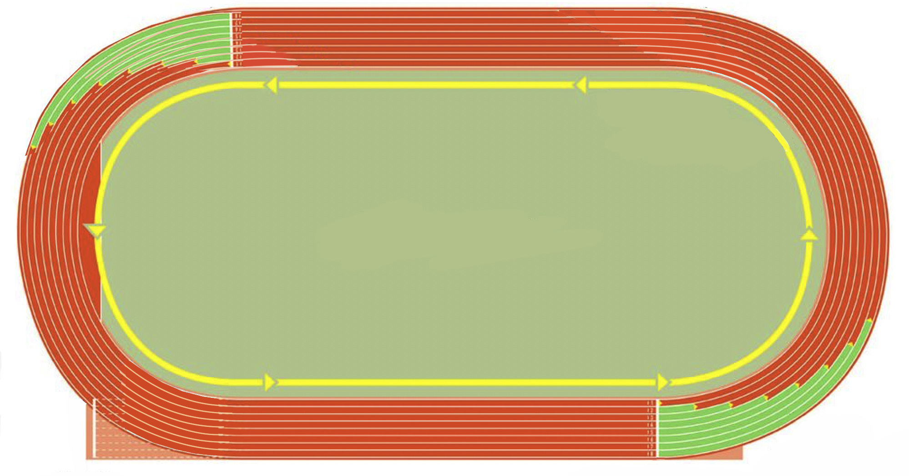

Staggers for 200 m start

100 m start
Staggers for 400 m start
Figure 5.1: Running tracks
Fundamental skills in sprints
All sprints have common basic skills required for a better performance in starting, running and finishing the race.
Starting phase
Sprinting event often begin with crouch start on the starting blocks sat behind the starting line, followed by athletic-official commands “on your mark”, “set” and “go”.
“On your mark”
This is the first command in sprints calling athletes to align on their positions on the starting line and placing legs on the blocks. This is how to perform “on your mark” command: